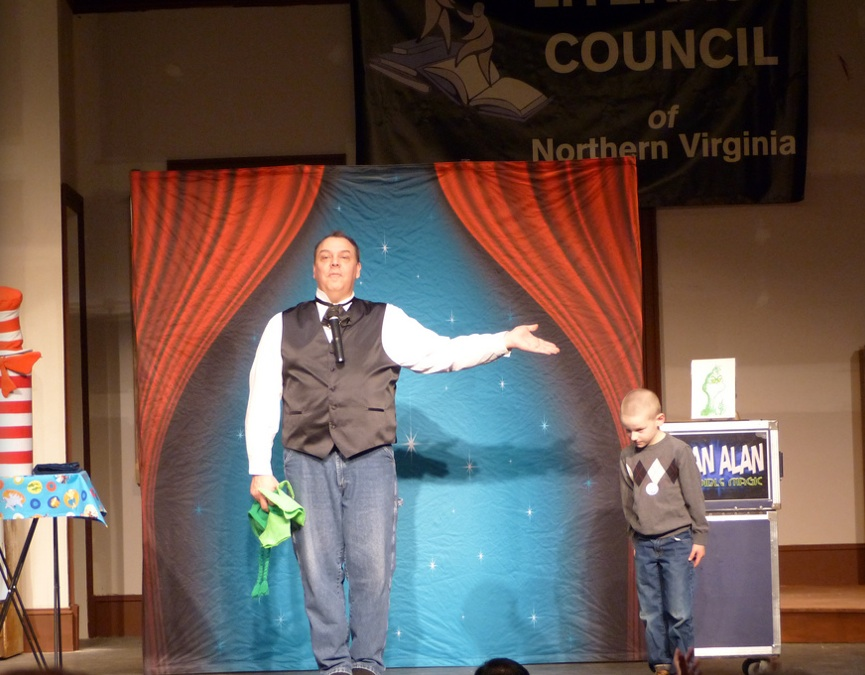

School Assemblies - The Types And Reasons Why
2026-04-22
The Complete Guide to School Assemblies: Reading Assemblies, Fundraising Assemblies, and Reward Programs That Engage and Inspire Students
What Is the Purpose of a School Assembly?
School assemblies are essential for building community, motivating students, and reinforcing educational goals. As a professional magician and national assembly presenter, I specialize in three highly effective types of school assembly programs:
- Reading Assemblies
- Fundraising Assemblies
- Reward Program Assemblies
Each assembly type serves a unique purpose and delivers meaningful benefits for students, teachers, and the entire school community.
1. Reading Assemblies: Encouraging Literacy Through Educational Magic
A Reading Assembly is designed to inspire students to read more, understand the value of reading, and connect with literacy in a fun and memorable way. These assemblies are ideal for:
- Read Across America Week
- Dr. Seuss celebrations
- Literacy month
- School‑wide reading initiatives
One Virginia Beach school asked me to create a custom reading assembly based on EllRay Jakes Is Magic. I produced morning video segments leading up to the event and performed two themed assemblies on show day. Because students already knew the book, they were more engaged, and the magic effects helped reinforce key story elements in a way that made the book come alive.
I’m passionate about reading because I once disliked it myself. Over time, I became an avid reader with more than 1,000 books in my home. That personal journey helps me connect authentically with students who struggle with reading.

2. Fundraising Assemblies: A High‑Impact Alternative to Traditional Fundraisers
Schools often rely on the same fundraising methods, candy bars, candles, catalogs. A Fundraising Assembly offers a fresh, exciting alternative that brings families together and raises significant money.
A magic fundraising show can:
- Attract entire families (multiple ticket sales per household)
- Create a memorable community event
- Include special features like “Sawing the Principal in Half”
- Generate revenue quickly and efficiently
These assemblies are typically held after school and can raise far more than traditional product‑based fundraisers.

3. Reward Program Assemblies: Celebrating Student Achievement
Many schools use my Reward Assemblies to celebrate academic success, good behavior, project completion, or honor‑roll achievements. These programs can be purely fun or educational, and often both.
A magic show feels special, organized, and exciting. It keeps students engaged while rewarding them for their hard work. These assemblies are usually held during school hours and can be tailored to your school’s goals.

Why Schools Choose My Assembly Programs
I’ve presented school assemblies across:
- Virginia (including Virginia Beach, Danville, Emporia, Martinsville, Northern VA, and all over the state)
- Maryland
- North Carolina
- South Carolina
- California
- Minnesota
- Ohio
I’ve also performed for three U.S. Presidents, starred in an international TV documentary in Germany and France, and delivered a TED Talk. I’m comfortable engaging any size audience and customizing programs to fit your school’s educational, financial, or motivational needs.
Book a School Assembly for Your Students
If you’re interested in a reading assembly, fundraising assembly, or reward program assembly, I’d love to help you create an unforgettable experience for your students.
Reach out today, share your goals, and together we’ll design a school assembly program that delights students, teachers, and parents.